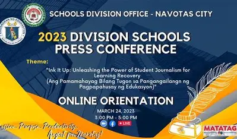
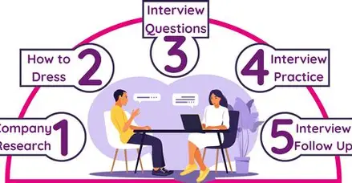
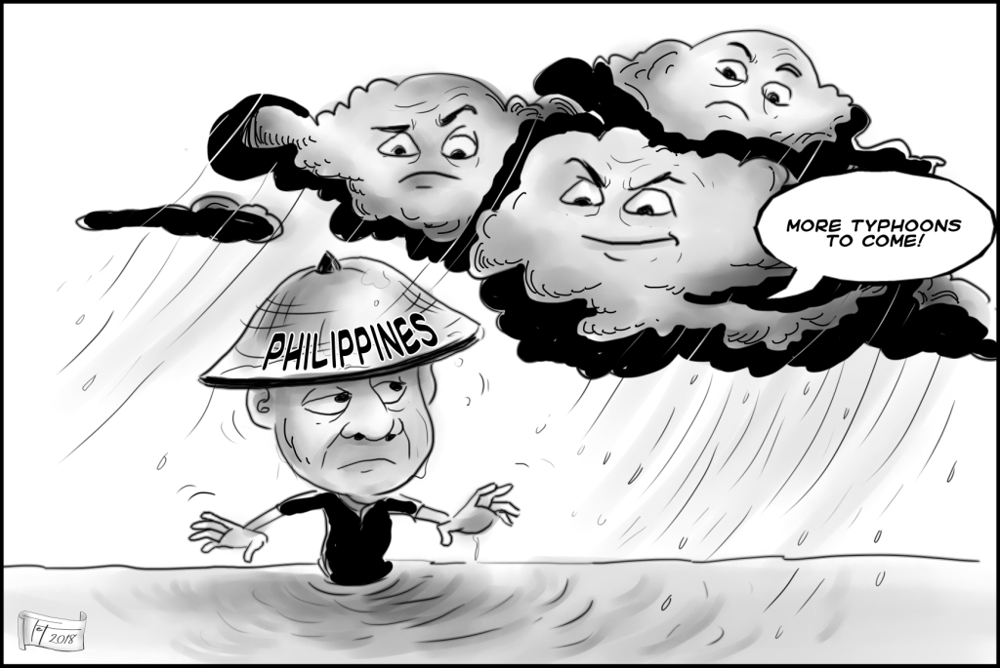
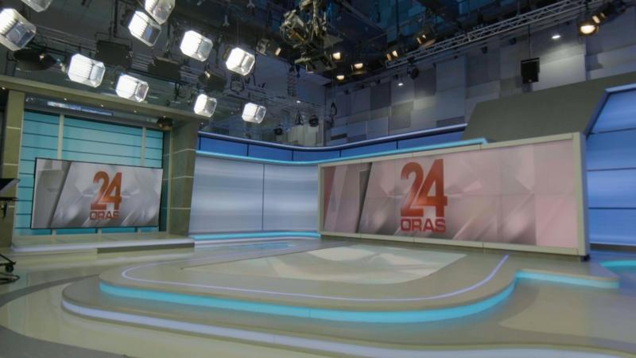
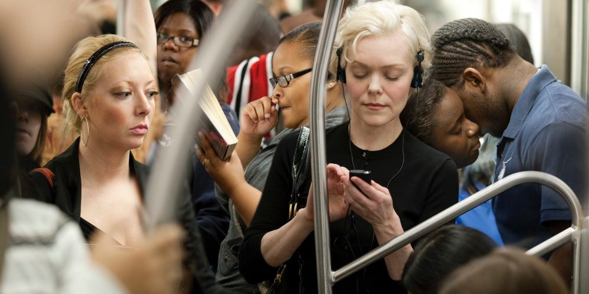

|  |
Division School Press Conference happens every year.
It is a test of knowledge and skills for every aspiring journalist.
An opportunity for you to showcase your skills in
writing, broadcasting, and reporting.
A competition that can lead to higher levels
of journalism, such as Regional and National levels,
a chance to represent your school and make your mark in the world of journalism,
and a platform to learn, grow, and connect with other journalists.
|
An interview in journalism is a conversation where a journalist asks questions to a person (the interviewee)
to gather information, opinions, or insights for a news story or feature. Interviews help journalists obtain
firsthand accounts, expert perspectives, and quotes that add credibility and depth to their reporting.
They can be conducted in person, over the phone, or online, and are essential for
uncovering facts, clarifying details, and understanding different viewpoints. |
|
|  |
Interview tips in journalism are practical guidelines that help journalists conduct effective interviews and gather valuable information.
These tips include preparing questions in advance, researching the interviewee and topic, listening actively, following up on interesting points,
being respectful and professional, taking clear notes or recording (with permission), and thanking the interviewee while clarifying any details before ending.
Following these tips ensures the interview is productive, accurate, and respectful, resulting in better stories and reliable information. |
Radio Broadcasting was famous just before Television Broadcasting entered, and it still is! They say it's easy, but the pressure is speechless. Even Television Anchors can do Radio! |
 |
|  |
Bringing you the latest ideas with a twist! An example of Editorial Cartooning you can't miss! This is also part of Feature Writing, that use of illustrations or cartoons to express opinions, provide commentary, or highlight social and political issues within a feature story.
These cartoons use humor, satire, and symbolism to make complex topics more engaging and understandable. |
Take a look inside of a Television Broadcasting Studio. Have you ever heard of GMA NEWS NETWORK? This is the studio. And yes its real. Interested, are you? With this many equipment, Television effects are fire! |
 |
|  |
"When commuting gets exciting, not boring."
Photojournalism is a form of journalism that uses images to tell a news story. It aims to present facts and provide a picture of reality to inform the public. This impactful form of news reporting conveys stories and objective truth through compelling photographs, making it a critical medium for educating and informing citizens. |